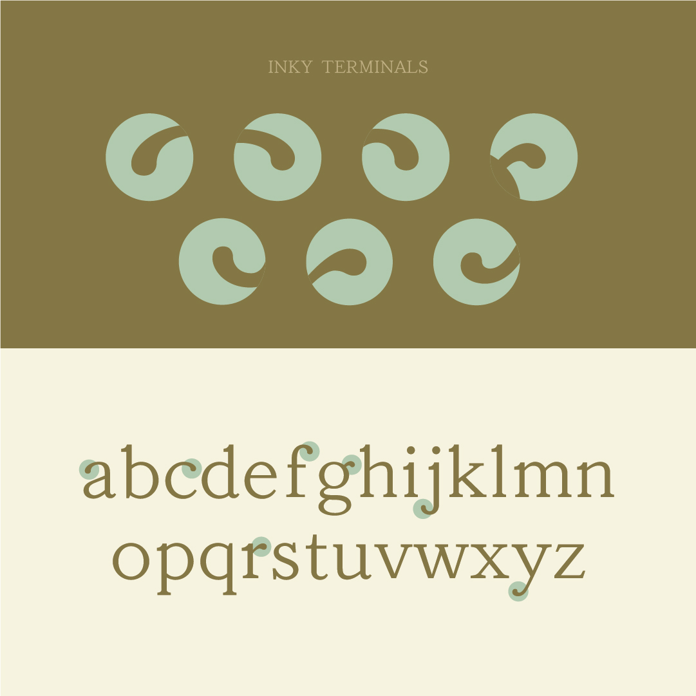
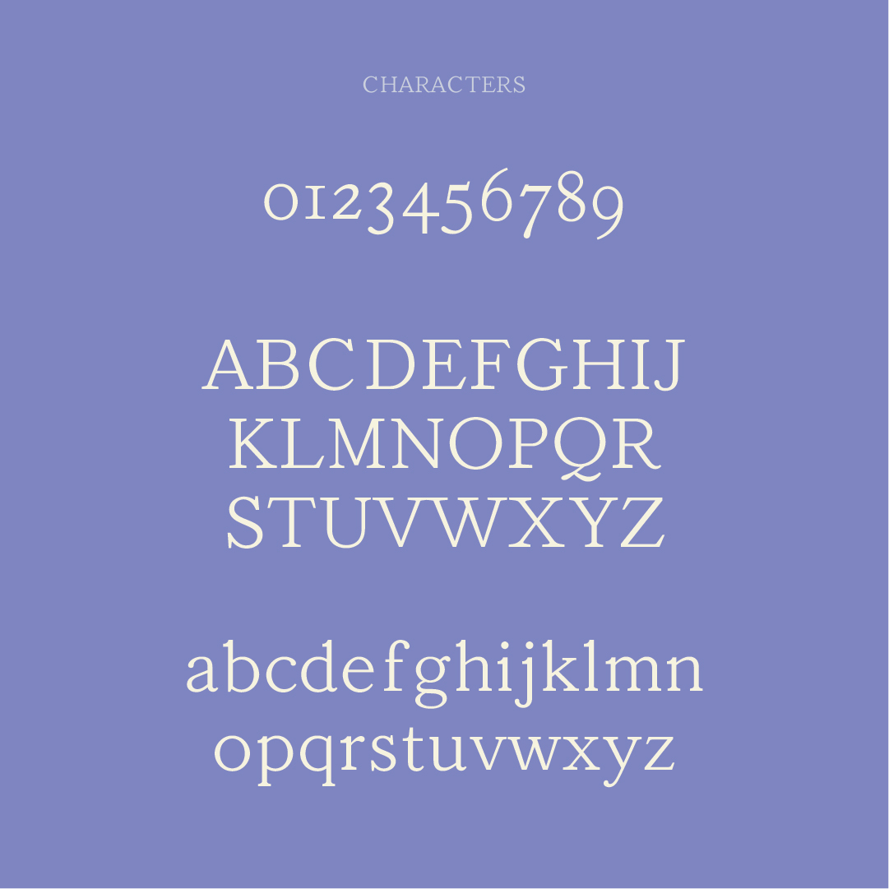
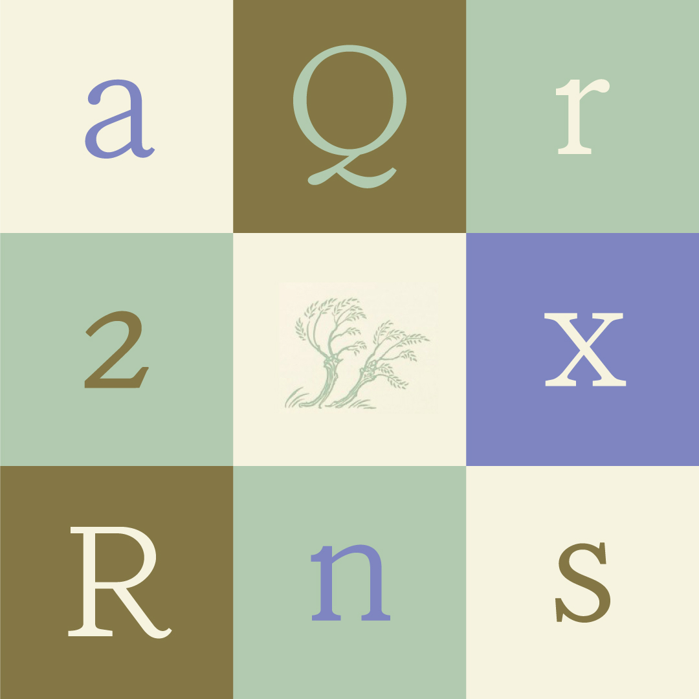
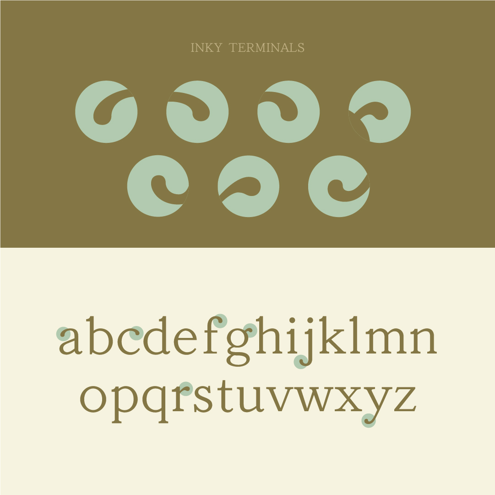
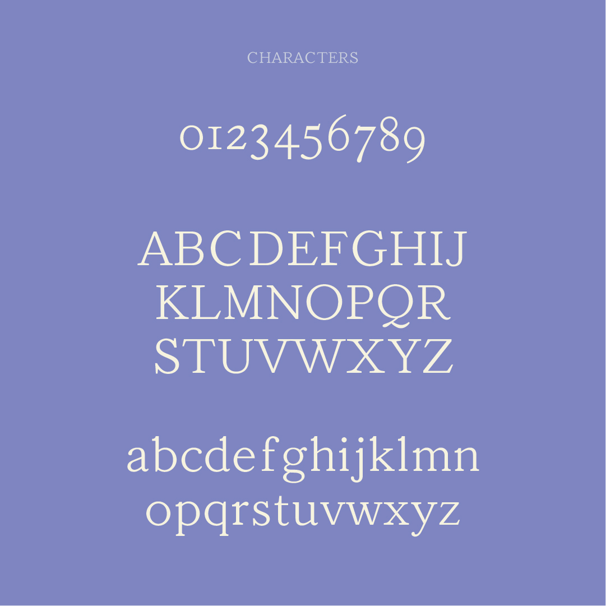
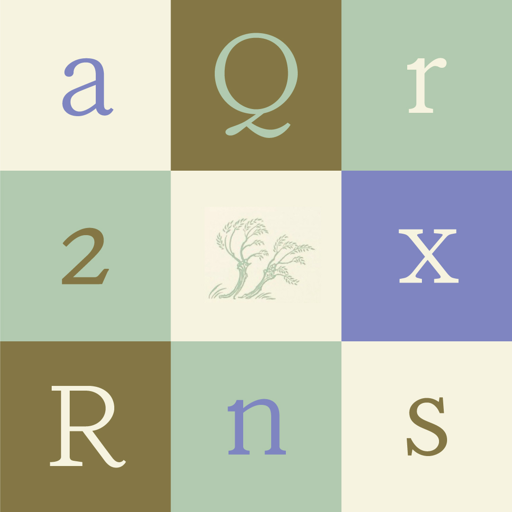

Hasten
Julia Liang
Hasten is a revival of the typeface found in the first edition of the Wind in the Willows, which is hard to identify because it comes from a time when text faces rarely had branded names and were instead called by their category, followed by a number. As a result, this typeface also references Bruce Old Style No. 31, which was Sol Hess’ first design for Lanston Monotype.
Julia Liang is an interaction designer by-day but spends most of her weeknights and weekends serving in the college ministry at her church. She loves ice skating and printmaking, and wouldn’t mind eating pickled vegetables for all her meals.
 




